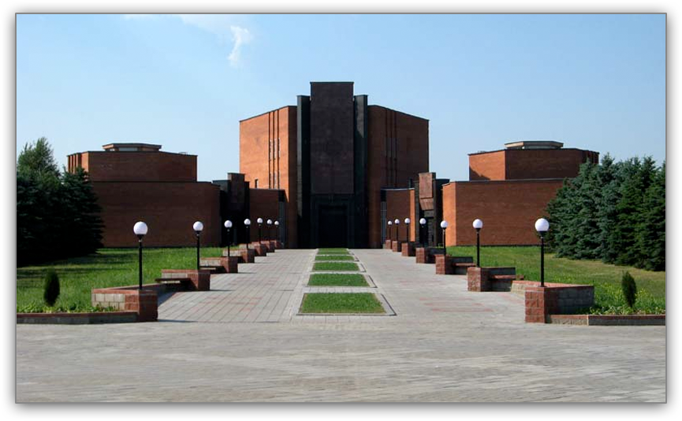
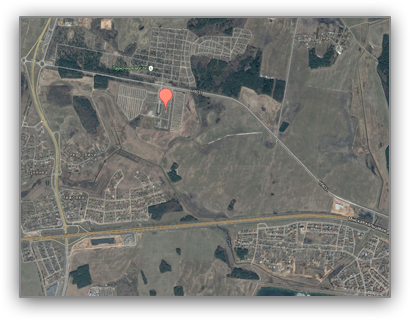
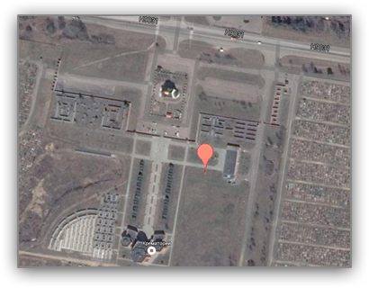
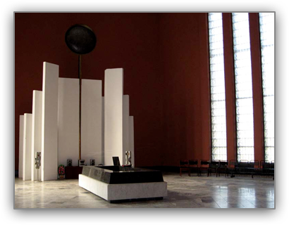
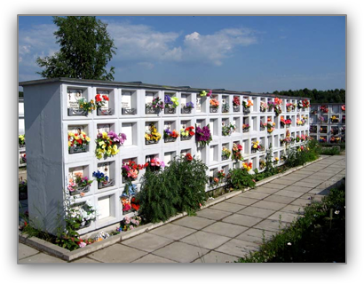
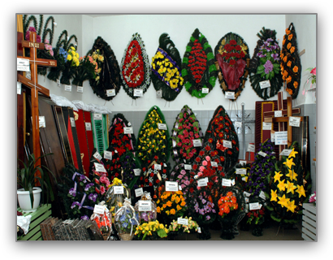

Крематорий
Открытие Минского крематория состоялось 1 августа 1986 г. Территория - 13,71 га. Первые захоронения были осуществлены в колумбарные стены у администрации здания крематория. Потребность захоронения в колумбарные стены возросла и было принято решение построить колумбарные стены на других кладбищах: Восточное, Северное, Кальварийское, Западное.
ав. 68, ДС Карастояновой - 2-е ворота кл.Северное
Расписаниеав.109, ДС Карбышева - 2-е ворота кл.Северное
Расписаниеав.109, ДС Карбышева - 2-е ворота кл.Северное
РасписаниеОстановка "2-е ворота Северное кладбище"
Координаты: 53.981758, 27.557072
 Минский крематорий предоставляет следующие услуги
- Кремация покойных
В Минском крематории для кремации покойных используются печи
ТАБО-CS. - Срочная кремация покойных
Выдача праха в течение 24 часов.
На сегодняшний день Минский крематорий предлагает несколько видов захоронений
- Захоронение урн с прахом в колумбарную стену:
кладбище Восточное;
кладбище Чижовское;
кладбище Петровщина.
- Захоронение в горизонтальном колумбарии
(колумбарный стакан):кладбище Северное;
кладбище Колодищи.
- Захоронение в существующую могилу
родственников.кладбище Северное;
кладбище Колодищи.
Урновое захоронение в существующую могилу родных или близких
- Для оформления и проведения урнового захоронения необходимо:
братиться к администратору Минского крематория;
заполнить заявку на урновое захоронение;
предоставить копии документов подтверждающих степень родства или свойства умершего (кремированного в крематории), по отношению к умершему в чью существующую могилу будет захоронена урна с прахом;
При отсутствии документов подтверждающих степень родства или свойства урна с прахом покойного может быть захоронена в колумбарной стене или горизонтальном колумбарии (колумбарный стакан).
Регистрация урнового захоронения
Для регистрации урнового захоронения необходимо:
- после проведения захоронения урны с прахом в существующую могилу обратиться в администрацию
- кладбища, на территории которого было произведено захоронение;
- предоставить документы:
ЗАЯВКУ на урновое захоронение;
КСЕРОКОПИИ ДОКУМЕНТОВ подтверждающие степень родства или свойства;
СПРАВКУ Минского крематория со сведениями о покойном.
При отсутствии выше указанных документов урновое захоронение будет признано самовольным.
Документы необходимые для оформления кремации покойного
- Паспорт заказчика;
- Паспортные данные умершего (оригинал или копия);
- Справка о смерти (свидетельство о смерти) оригинал
Прием покойных на кремацию производится по истечении 24 часов с момента наступления смерти.
При отсутствии вышеуказанных документов в услуге по кремации будет отказано.
Справка по тел.: 512-61-99; 512-61-28.
Для проживающих в г.Минске оформление заказа на кремацию проводят по ул.Ольшевского,12
Для иногородних - в филиале магазина крематория.
Документы необходимые для перезахоронения урны с прахом
- Паспорт заказчика;
- Справка Минского крематория о месте захоронения урны с прахом и сведениях о покойном
(счет-заказ) оригинал; - Заявление.
Перезахоронение урны с прахом производится исключительно по заявлению заказчика или по заявлению уполномоченного лица заказчика на основании письменного нотариально заверенного разрешения.
Справка по тел.: 289-05-09.
Дополнительные услуги
- Заказы на установку фотомедальонов
Прием фотомедальонов: пн.-чт.: 9.00 - 16.00, пт., предпраздн.дни: 9.00 - 15.00
- Заказы на обновление текста на плитке
Заказы оформляются в магазине крематория. Установка фотомедальонов и обновление текста плиты проводятся с 1 апреля по 1 октября в течении двух недель после приема заказа.
- Заказы на замену надгробных сооружений
Замену малогабаритных памятников, используемых при захоронении урн в колумбарный стакан и плиток, принимаются исключительно по письменному заявлению заказчика или по заявлению уполномоченного лица заказчика на основании письменного нотариально заверенного разрешения.
При себе иметь:
- Паспорт:
- Справку Минского крематория о месте захоронения и сведениях о покойном (счет-заказ) оригинал
Справка по тел.: 289-05-09, 512-61-28.
Изготовление колумбарных плит, обкладок для колумбарных ниш и колумбарных малогабаритных памятников с высечкой текста на гравировальном станке.
 Исторические корни
Кремация как вид погребения существует издавна. Древние люди воспринимали огонь как божество и считали, что предание огню тела умершего родственника обеспечит его защиту в загробном мире. Традиция хранения кремированных останков в контейнере появилась со времен Древнего Рима. Захоронение украшенных урн осуществлялось в особых местах – колумбариях, хотя сейчас выбор средств для хранения гораздо шире.
Наиболее широко кремация распространена в Японии (98% от всех умерших), в Чехии (95%), в Великобритании (69%), в Дании (68%), в Швеции (64%), в России (61%), в Республике Беларусь (48%) от общего числа умерших.
Исторические корни
289-05-20 – начальник крематория
512-61-28 – приемная
289-05-19 – зам. начальника
512-61-99 – администратор
512-61-98 – магазин ритуальных услуг
289-05-09 – мастер колумбария
Режим работы с посетителями: пн.-чт.: 9.00 - 16.00, пт.: 9.00 - 15.00, сб., вс. - вых
Выдача урн с прахом: пн.-чт.: 9.00 - 16.00, пт. 9.00 - 15.00, сб., вс. - вых.
Время посещения крематория: с 1апреля по 1 сентября 9.00 - 21.00, с 1 сентября по 1 апреля: 9.00 - 19.00
Ритуальный зал, холодильная камера
На территории крематория расположены три ритуальных зала площадью:
- 114,0 м2
- 250,0 м2
- 110,7 м2
а так же рядом с ритуальными залами, имеется холодильная камера.
Магазин
В помещении рядом с ритуальными залами размещен магазин, где можно приобрести все необходимое из ритуальных принадлежностей (урны для праха, гробы, венки, корзины, кресты, плиты для колумбарной ниши и др.) и оформить документы для захоронения.
